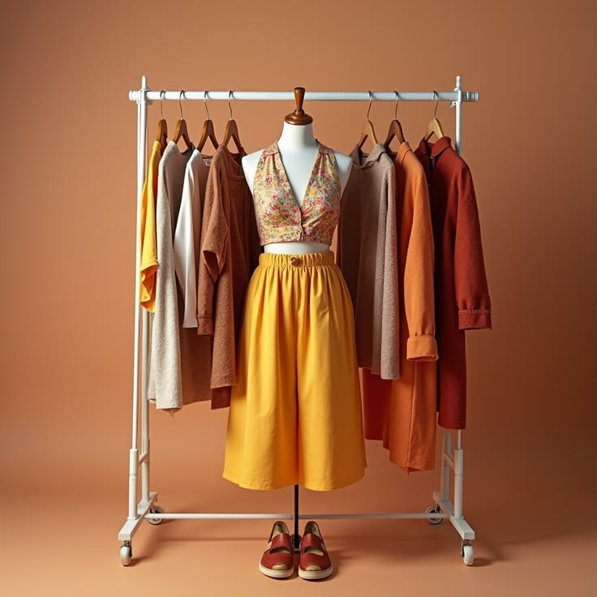
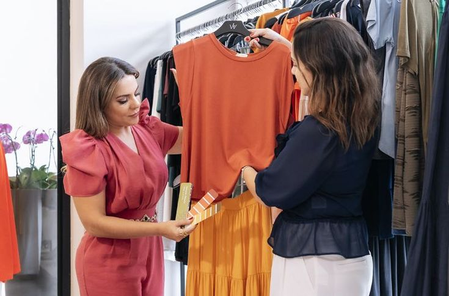

Cómo escoger ropa de segunda mano de calidad
Antes de comprar una prenda de segunda mano,
revisa su estado, las costuras, el tipo de tela
y los acabados. Elegir correctamente hará que
tus prendas duren mucho más tiempo.
20 Mayo 2025
6 min lectura
¿Por qué comprar ropa de segunda mano ayuda al planeta?
La moda sostenible reduce el desperdicio textil y disminuye el impacto ambiental. Dar una segunda vida a una prenda también es una forma de consumir de manera responsable.
15 Mayo 2025
5 min lectura

5 ideas para crear outfits vintage con prendas básicas
Con una camisa clásica, un jean recto y algunos accesorios puedes crear looks únicos sin gastar demasiado. Descubre combinaciones fáciles para cualquier ocasión.
10 Mayo 2025
4 min lectura